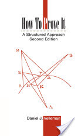
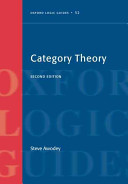

Recommended Reading Material
Suggestions
For Haskell, I suggest Haskell: The Craft of Functional Programming [Thompson 1999] and Introduction to Functional Programming using Haskell [Bird 1998]. Real World Haskell [O’Sullivan et al. 2008] can be used but it must be read carefully as it is out of date and contains a significant number of errata.
For Category Theory, I suggest Lawvere's Conceptual Mathematics [2009], Awodey's Category Theory [2010], and Mac Lane's Categories for the Working Mathematician [Lane 1998], in that order. Alternatively, the order can be reversed: Mac Lane can be used as a forcing function to read Awodey; and Awodey can be used as a forcing function to read Lawvere.
For Abstract Algebra, and as preparation for Category Theory, I recommend Mac Lane's Algebra [1999]. Lang's Algebra [2002] might be useful as a reference, or if you're really interested in abstract algebra.
General
- How to Prove It [Velleman 2006]
 A wonderful book that introduces a structured method for proving things. Required reading for anyone who is interested in writing or understanding proofs.
- Introduction to Logic [Tarski 2013]
 A monumental work by one of the greatest logicians of all time. Everyone should read this book.
A monumental work by one of the greatest logicians of all time. Everyone should read this book.
Haskell
- Introduction to Functional Programming using Haskell [Bird 1998]
 One of the best introductory books on programming ever written. As the title suggests, this is not so much a Haskell book as a FP book that happens to use Haskell. It won't teach you how to use libraries or spend much time on pragmatic issues, but it will teach you how to think about programs in a functional way.
One of the best introductory books on programming ever written. As the title suggests, this is not so much a Haskell book as a FP book that happens to use Haskell. It won't teach you how to use libraries or spend much time on pragmatic issues, but it will teach you how to think about programs in a functional way.- Programming in Haskell [Hutton 2007]
 Focuses on core langauge concepts and avoids advanced topics. It's somewhat lightweight at only 171 pages, and its organization is a bit strange, but it is an excellent introduction to the Haskell language.
Focuses on core langauge concepts and avoids advanced topics. It's somewhat lightweight at only 171 pages, and its organization is a bit strange, but it is an excellent introduction to the Haskell language.- Real World Haskell [O’Sullivan et al. 2008]
This book presents a pragmatic introduction to writing Haskell with a focus on performance. Unfortunately, it contains a number of errata and has become somewhat obsolete. Use the online version and read the comments as many of them correct errors or explain other issues. Also see this summary of issues.
- The Haskell Road to Logic, Maths and Programming [Doets and Eijck 2004]
This isn't so much a Haskell book as a math book that uses Haskell for its examples. That said, it's a wonderful introduction to the sort of mathematics that you can express in Haskell (which is quite a lot).
- Haskell: The Craft of Functional Programming [Thompson 1999]
 A well organized introductory text that does a good job of teaching and motivating the functional perspective. Might be paced a bit slowly for some, but others will enjoy its thoroughness.
A well organized introductory text that does a good job of teaching and motivating the functional perspective. Might be paced a bit slowly for some, but others will enjoy its thoroughness.- Parallel and Concurrent Programming in Haskell [Marlow 2013]
 Written by one of the implementors of Haskell's parallel runtime. Absolutely wonderful book.
Written by one of the implementors of Haskell's parallel runtime. Absolutely wonderful book.
Cateogry Theory
See also: Edward Kmett's list on Quora.
- Conceptual Mathematics [Lawvere and Schanuel 2009]
 A Category Theory text with few prerequisites, suitable for a "motivated high-schooler". This is a great introduction to Category Theory for folks without a mathematical background and will prepare you to read some of the more advanced texts that follow.
A Category Theory text with few prerequisites, suitable for a "motivated high-schooler". This is a great introduction to Category Theory for folks without a mathematical background and will prepare you to read some of the more advanced texts that follow.- Categories for the Working Mathematician [Lane 1998]
 Written for "working mathematicians", this dense book is a considerable challenge even for graduate students. That said, it's also the most comprehensive and thorough Category Theory text, written by one of the founders of the discipline.
Written for "working mathematicians", this dense book is a considerable challenge even for graduate students. That said, it's also the most comprehensive and thorough Category Theory text, written by one of the founders of the discipline.- Category Theory [Awodey 2010]
 The standard modern text on Category Theory, and the best all around introduction. Sits somewhere between Lawvere and Schanuel [2009] and Lane [1998] in difficulty. Highly recommended.
- Abstract and Concrete Categories: The Joy of Cats [Adámek et al. 2009]
 Sits somewhere between Lawvere and Schanuel [2009] and Awodey [2010] in difficulty. A good introductory text, but mostly redundant if you're already reading those two. It might be useful as a bridge between Lawvere and Awodey for some people.
Sits somewhere between Lawvere and Schanuel [2009] and Awodey [2010] in difficulty. A good introductory text, but mostly redundant if you're already reading those two. It might be useful as a bridge between Lawvere and Awodey for some people.
Abstract Algebra
- Algebra [Lane and Birkhoff 1999]
 In the words of one of Mac Lane's students, "I know of no book on pure mathematics more worth reading than this one". Introduces algebra methodically and thoroughly from first principles. A much easier book than Categories for the Working Mathematician [Lane 1998], Algebra will introduce you to Mac Lane's idiosyncratic style and is an excellent preparation for Category Theory.
In the words of one of Mac Lane's students, "I know of no book on pure mathematics more worth reading than this one". Introduces algebra methodically and thoroughly from first principles. A much easier book than Categories for the Working Mathematician [Lane 1998], Algebra will introduce you to Mac Lane's idiosyncratic style and is an excellent preparation for Category Theory.- Algebra [Lang 2002]
 Weighing in at over 900 pages, Lang is somewhere between an graduate-level textbook and some sort of beastiary of algebraic structures. Lang introduced a novel pedagogy for algebra that borowed new ways of thinking from category theory and homological algebra, which has influenced subsequent books.
Weighing in at over 900 pages, Lang is somewhere between an graduate-level textbook and some sort of beastiary of algebraic structures. Lang introduced a novel pedagogy for algebra that borowed new ways of thinking from category theory and homological algebra, which has influenced subsequent books.
References
Adámek, J., Herrlich, H., and Strecker, G. 2009. Abstract and concrete categories: The joy of cats. Dover Publications, Incorporated. http://books.google.com/books?id=rqT4PgAACAAJ.
Awodey, S. 2010. Category theory. OUP Oxford. http://books.google.com/books?id=xC1bpwAACAAJ.
Bird, R.S. 1998. Introduction to functional programming using Haskell. Prentice-Hall. http://www.cs.ox.ac.uk/publications/books/functional/.
Doets, K. and Eijck, J. van. 2004. The haskell road to logic, maths and programming. King’s College Publications. http://books.google.com/books?id=5Xk-AQAAIAAJ.
Hutton, G. 2007. Programming in haskell. Cambridge University Press. http://books.google.com/books?id=olp7lAtpRX0C.
Lane, S. 1998. Categories for the working mathematician. U.S. Government Printing Office. http://books.google.com/books?id=MXboNPdTv7QC.
Lane, S. and Birkhoff, G. 1999. Algebra. Chelsea Publishing Company. http://books.google.com/books?id=L6FENd8GHIUC.
Lang, S. 2002. Algebra. Springer New York. http://books.google.com/books?id=Fge-BwqhqIYC.
Lawvere, F. and Schanuel, S. 2009. Conceptual mathematics: A first introduction to categories. Cambridge University Press. http://books.google.com/books?id=h0zOGPlFmcQC.
Marlow, S. 2013. Parallel and concurrent programming in haskell: Techniques for multicore and multithreaded programming. O’Reilly Media. http://books.google.com/books?id=wSkRAAAAQBAJ.
O’Sullivan, B., Goerzen, J., and Stewart, D. 2008. Real world haskell: Code you can believe in. O’Reilly Media. http://book.realworldhaskell.org.
Tarski, A. 2013. Introduction to logic: and to the methodology of deductive sciences. Dover Publications. http://books.google.com/books?id=vtzCAgAAQBAJ.
Thompson, S. 1999. Haskell: The craft of functional programming. Addison Wesley. http://books.google.com/books?id=a39QAAAAMAAJ.
Velleman, D. 2006. How to prove it: A structured approach. Cambridge University Press. http://books.google.com/books?id=sXt-ROLLNHcC.